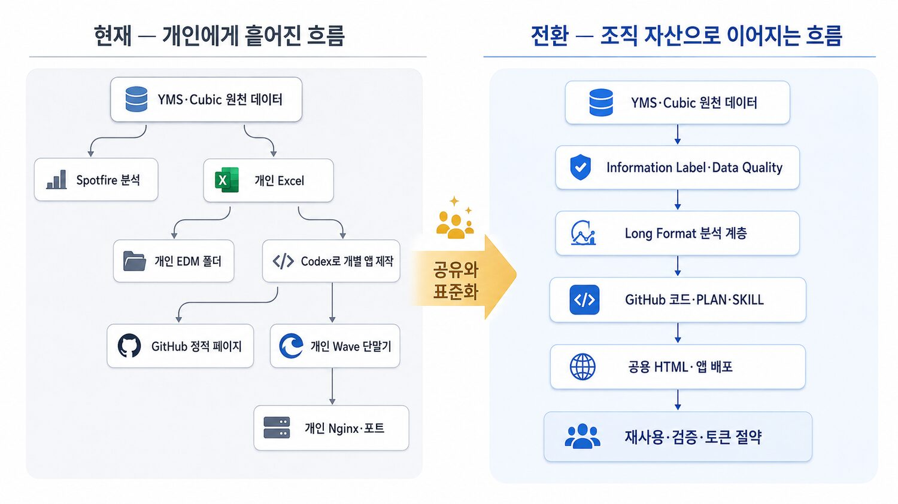

AI는 모두를 비슷하게 올리지 않는다.
시간이 지나면 중간이 사라지고 상·하위가 벌어진다.
오늘 토큰 부족 사건이 더 무서운 이유는 단순히 “불편하다”가 아니다. 이미 조직 안에서는 AI를 루틴에 붙인 사람과 여전히 손으로 반복하는 사람의 산출량 차이가 벌어지고 있다. 같은 팀, 같은 직무라도 시간이 지나면 차이는 누적되고, 결국 상위 10%는 더 빨라지고 하위 10%는 제자리에 머문다.
보충 리포트에서 본 핵심 신호
숫자 자체보다 중요한 건 방향이다. 조직 평균보다 분포의 벌어짐을 봐야 한다. AI는 평균을 조금 올리는 기술이 아니라, 준비된 사람에게는 지렛대가 되고 준비 안 된 사람에겐 더 큰 격차를 만든다.
품질팀 버전으로 번역하면
엑셀 수작업, 캡처 붙이기, 반복 복붙. 속도는 사람 체력에 묶인다.
프롬프트는 쓰지만 매번 처음부터 다시 설명한다. 결과는 나오지만 축적이 안 된다.
파일·템플릿·스크립트로 기억을 외부화한다. 같은 일을 다시 할 때 훨씬 싸고 빨라진다.
멀티에이전트, 루프, 검증 장치까지 붙인다. 사람이 매번 손대지 않아도 운영이 굴러간다.
그래서 오늘 세미나가 필요한 이유
토큰 절약은 비용 절감이 아니다. AI 활용 상위권의 일하는 방식을 팀 전체의 기본값으로 내리는 작업이다. 토큰이 막혔을 때 무너지는 사람을 줄이고, 작은 모델·스크립트·공유 메모리로도 굴러가는 팀을 만드는 게 목적이다.
그냥 각자 쓰게 두면 생기는 일
- 잘 쓰는 사람만 더 빨라지고 노하우는 개인에게 갇힌다
- 못 쓰는 사람은 “AI는 남의 일”이 되어버린다
- 모델 차단, 토큰 부족, 정책 변경 때 조직 생산성이 급락한다
- 결국 회사 안에서도 AI 숙련 격차 = 성과 격차가 된다
이 페이지는 이렇게 보면 된다
메인페이지는 문제 인식 → 공유 문화 → 데이터 품질 → 회사형 실전 방법 → 실제 사례 순서로 천천히 읽는다. 품질팀 설명과 임원 설명에서 같은 페이지를 사용하되, 강조점만 다르게 가져간다.
1. 먼저 볼 흐름
- 오늘 사건 — 왜 이 세미나가 필요한가
- 토큰 누수 — 어디서 비용이 새는가
- 실전 조치 — PLAN·Skill·Python·README로 이어지는 회사형 흐름
- 운영 원칙 — 개인이 당장 지킬 5원칙
- 조직 설계 — 어떤 모델을 어디에 쓸 것인가
- 실사례 — 실제로 돌려보니 뭐가 쌌는가
- 메모리·루프 — 기억은 파일로, 루프엔 브레이크
- 사내 사례 — 외부에 공개하지 않고 링크로만 연결
2. 이 페이지의 결론
핵심 메시지는 단순하다. 큰 모델은 판단에만, 작은 모델은 반복에, 결정론적 일은 스크립트로. 그리고 실제 실험 결과까지 보면 “싼 초안은 Z AI, 최신 탐색은 Gemini, 비싼 판단은 Codex”가 현재 가장 실용적이다.
메인에 남기고, 상세는 접는다
핸드폰 서버, 서버 노트북, 배포 실습, DB 가이드는 중요하지만 모두 메인에 길게 펼치면 흐름이 깨진다. 메인에는 판단 기준과 운영 원칙을 남기고, 상세 절차는 확장자료/가이드로 넘기는 편이 낫다.
부록 성격의 자료 한 번에 보기
핸드폰 서버는 개념 실험용, 서버 노트북은 부서 내부 공유용, 정식 팀 서버는 장기 운영용으로 보는 것이 자연스럽다. 메인 세미나에서는 이 세 단계를 “운영 성숙도” 관점으로만 이해하고, 실제 설치 절차는 각 가이드 문서로 넘긴다.
index3.html 같은 구버전/중복 페이지는 앞으로 메인페이지 기준으로 정리해 혼선을 줄이는 것이 좋다.
같은 이야기, 두 번의 다른 대화
이 페이지는 품질팀 부서원과 임원에게 각각 한 번씩 설명한다. 내용을 두 벌로 만들 필요는 없다. 현상을 보는 눈은 같고, 질문의 높이만 다르다.
품질팀 부서원에게는 “내일 어떻게 일할까”
PLAN.md를 어떻게 쓰는지, Python이 무엇을 계산하고 Codex에는 무엇만 보여줄지, 폴더와 README를 어떻게 남길지를 실제 문구로 이야기한다. 기술을 잘 아는 사람만 공유할 수 있다는 부담을 줄이는 것이 중요하다.
- Excel을 당장 없애자는 이야기가 아니다.
- Spotfire를 Codex로 바꾸자는 이야기도 아니다.
- 개인 분석을 조직이 다시 쓸 수 있는 형태로 한 단계만 더 남기자는 이야기다.
- GitHub 계정이 없어도 프로젝트 폴더 규칙부터 시작할 수 있다.
임원에게는 “어떤 기반을 열어줄까”
엔지니어가 만든 좋은 결과가 개인 PC와 Excel에 갇히는 이유, GitHub 계정 1,000개의 제약, 정적 페이지와 동적 앱의 배포 간극을 보여준다. 조직을 새로 만들어 달라는 요청보다 현장의 작은 실험이 이어질 통로를 질문한다.
- GitHub 접근을 어디까지 확대할 것인가?
- 데이터 테이블과 Information Label의 책임자는 누구인가?
- 검증된 HTML·앱을 개인 PC 밖에 올릴 경량 경로가 있는가?
- 코드와 데이터 품질 기여를 어떻게 발견하고 인정할 것인가?
품질팀 발표에서 던질 질문
- 지난달에 만든 Excel을 다른 사람이 다시 사용할 수 있는가?
- 내가 자리를 옮겨도 이 분석을 재실행할 수 있는가?
- 같은 Cubic 접속 오류를 옆자리 동료도 다시 겪고 있지는 않은가?
- Codex에게 전체 데이터를 보여주지 않고도 결과를 만들 수 있는가?
- 오늘 배운 한 가지를 README 또는 Skill에 남길 수 있는가?
임원 발표에서 던질 질문
- GPT 크레딧은 반복 비용인데, 그 결과인 코드는 어디에 축적되는가?
- GitHub 계정 부족 때문에 공유할 사람과 소비할 사람을 같은 방식으로 제한하고 있지는 않은가?
- YMS·Cubic 데이터의 의미와 품질을 AI가 이해할 수 있는 형태로 정리했는가?
- 현장 앱이 개인 Wave 단말기에서 멈추면 누가 이어받을 수 있는가?
- AI 조직들이 서로 같은 기반 위에서 출발하도록 무엇을 연결할 수 있는가?
한 번의 분석이 조직 자산이 되는 여섯 장면
거창한 플랫폼이 생길 때까지 기다리지 않아도 된다. 개인이 시작한 작은 분석이 다음 사람에게 이어지는 데 필요한 최소 흐름을 먼저 만들 수 있다.
1. 발견
문제와 데이터 원천을 확인한다. “불량률이 이상하다”보다 어떤 기간·제품·라인·지표인지 좁힌다.
2. 계획
PLAN.md에 입력, 산출물, 제약, 완료 조건을 적는다. 아직 코드를 만들지 않는다.
3. 계산
SQL과 Python이 PC에서 전체 데이터를 처리한다. 원천과 분석 결과를 분리한다.
4. 해석
Codex에는 품질검사 결과, 요약표, 대표 그래프만 보여주고 의미와 예외를 함께 검토한다.
5. 공유
HTML 보고서와 README를 만든다. 계정이 있으면 GitHub, 없으면 영문 프로젝트 폴더에 남긴다.
6. 환류
다시 쓸 규칙은 Skill에, 환경과 실행법은 README에, 과거 기록은 archive에 보낸다.
여기서 토큰이 줄어드는 이유
문제 정의가 고정되어 재질문이 줄고, PC가 전체 행을 계산해 데이터 토큰이 줄고, README가 환경 설명을 대신해 반복 설명이 줄고, Skill이 검증된 절차를 재사용해 시행착오가 줄어든다. 토큰 절약은 한 문장의 요령이 아니라 이 흐름 전체의 결과다.
램프 속 지니는 매달 더 강해진다
요즘 SNS를 열면 어제의 최고 모델이 오늘은 구형이 되었다는 이야기가 반복된다. 중요한 것은 모델 순위가 아니다. 이제 한 사람이 모든 변화와 사용법을 따라잡는 방식 자체가 한계에 왔다는 사실이다.
GPT‑5.6 — 성능보다 비용 이야기가 커졌다
최근 발표에서 코딩 효율과 비용 절감이 전면에 등장했다. SNS에서도 “무엇이 가장 똑똑한가”만큼 “같은 일을 얼마에 끝내는가”가 화제가 된다. 기업에서는 모델의 최고점보다 반복 가능한 경제성이 더 중요해지고 있다.

Claude Fable 5 — 며칠 동안 일하는 에이전트
긴 작업을 계획하고, 하위 에이전트에 나누고, 스스로 검사하는 모습이 소개되었다. 이제 질문에 답하는 챗봇보다 업무를 이어가는 에이전트가 관심의 중심이다. 그만큼 종료 조건·권한·비용 관리가 중요해졌다.

Grok Build — 터미널이 새로운 전쟁터가 되었다
코딩 에이전트가 터미널에서 계획하고 검색하고 코드를 바꾸는 경쟁에 들어왔다. SNS에서는 여러 에이전트를 동시에 돌리는 영상이 회자되지만, 회사에서는 더 많은 에이전트보다 검증된 코드의 재사용이 먼저다.

Qwen·DeepSeek·GLM — 공개가 생태계를 만든다
중국 오픈웨이트 모델이 빠르게 파생되고 개선되는 장면은 공유의 힘을 보여준다. 모든 것을 공개하자는 뜻이 아니다. 사내에서도 보안 범위 안에서 코드·Skill·데이터 정의를 공유하면 같은 가속이 가능하다는 이야기다.
가장 큰 토큰 절약은 같은 코드를 두 번 만들지 않는 것이다
현재 사내 AI 조직은 사업부·팀·그룹 단위로 빠르게 생기고 있다. 이때 각 조직이 자기 방식으로 SQL, 전처리, 시각화, 배포 코드를 다시 만들면 AI 사용량은 늘지만 조직의 지식은 축적되지 않는다. 토큰을 아끼는 가장 강한 방법은 프롬프트를 몇 줄 줄이는 것이 아니라, 앞사람이 검증한 결과에서 다음 사람이 출발하게 만드는 것이다.
Stallman — 공유의 권리
소프트웨어를 읽고 고치고 나눌 수 있다는 생각은 개발자 문화의 출발점이 되었다.
Torvalds — 분산 협업
Git은 수많은 사람이 각자 작업하면서도 변경 이력을 합칠 수 있게 만들었다.
GitHub — 발견과 인정
Pull Request와 Star는 코드가 개인 폴더를 넘어 공동 자산이 되는 사회적 장치를 만들었다.
사내 Star는 인기투표가 아니다
“다시 쓸 가치가 있다”는 발견 신호다. 평가는 Star 수 하나가 아니라 실제 재사용, 오류 수정, 개선 PR, 절약 시간과 함께 봐야 한다.
GitHub 계정 1,000개의 한계
작성·검토자는 GitHub에서 협업하고, 일반 사용자는 별도 카탈로그나 배포 페이지에서 결과를 보게 해야 한다. 동시에 현장 기여자에게 계정을 확대해야 공유가 일부 전문가의 일이 되지 않는다.
GitHub Enterprise의 비용은 코드를 보관하는 비용이 아니라 이미 지불한 AI 토큰과 엔지니어 시간을 조직 자산으로 남기는 비용으로 볼 수 있다. 정확한 계약 비용은 동일한 사용자·기간 기준으로 다시 확인하되, 경영 질문은 단순하다. “저장소 비용을 아끼느라 같은 코드를 계속 다시 만들고 있지는 않은가?”

현장의 목소리를 먼저 듣는다 — 라이선스는 개인 소유가 아니라 공공재다
AI를 위에서 강하게 밀어붙일수록, 현장에서는 다른 온도가 감지된다. 사내 익명 게시판에는 이런 목소리가 올라온다. 이 말들을 불평이 아니라 신호로 읽어야 한다. 도구가 부족한 것이 아니라 배분과 목적이 어긋나 있다는 신호다.
“오늘 전사 크레딧 소진됐대요”
“써보려니 이미 끝났다.” 밖을 잘 모르는 임원이 몰아 쓰면 정작 실무자에게는 남지 않는다.
“문제를 먼저 놓아야지”
“Agent를 만들자를 먼저 정하고 문제를 찾으니, 뭐든 Agent로 해보려다 낭비가 생긴다.” — 해결책이 문제를 찾아다니는 구조.
“자원이 뒷받침돼야 돌아가지”
“개발만 하면 뭐하나, 쇼잉이지.” 크레딧·서버 없이 과제 수만 늘리면 전시행정이 된다.
“필요한 데만 써야지”
토큰당 과금 전환·예산 조기 소진 뉴스와 겹치며 ‘선별해서 몇 과제만’ 이라는 냉소가 퍼진다.
숫자로 본 배분의 현실
발표 30% vs 현실
“2만 명 중 30%가 Codex를 쓴다”는 집계는 특정 부서 AI팀에 몰아준 결과다. 실제 한 파트에서는 17명 중 3명만 쓴다.
1인 월 80만원
Codex 크레딧 월 1만 개 ≈ 80만원 상당이 소수에게 간다. 받은 사람의 개인 생산성으로만 소진되면 조직엔 남는 게 없다.
GitHub 1인 40만원/년
GitHub Enterprise는 1인당 연 40만원. 이건 코드 보관비가 아니라 이미 쓴 토큰·시간을 자산으로 남기는 비용이다.
그래서 바꿔야 할 것 — 공공재로 재설계
넓게 주고, 공공재로 쓰게
- GitHub는 50% 이상, 개발 도구(Codex 등)는 80% 이상 되도록 넓게 배분
- 크레딧을 받은 사람은 개인용을 넘어 부서 공공재로 쓰는 것을 전제로
- 공공재로 만든 웹서비스는 GitHub에 올려 모두가 나눠 쓰기
스타(⭐) 문화 = 책임과 보상
- 재사용된 코드·앱에 Star로 발견 신호를 남긴다
- 기여자에게 보상(평가·인정)을, 동시에 책임(유지·정확성)을
- Star 수가 아니라 실제 재사용·개선 PR·절약 시간으로 평가
핵심은 도구를 더 사느냐가 아니다. 소수에게 몰린 라이선스를 공공재로 돌리고, 현장의 목소리를 경청해 “진짜 필요한 문제”에 리소스를 붙이는 것이다. 그때 비로소 크레딧이 개인의 소비가 아니라 조직의 자산이 된다.
AI가 빨라질수록 데이터 품질은 더 중요해진다
품질·제조 데이터는 YMS와 Cubic에 비교적 잘 보관되어 있고, 지금까지 Spotfire가 공식 분석의 중심 역할을 해왔다. 그러나 진입 장벽이 높아 많은 엔지니어가 데이터를 내려받아 각자의 Excel과 EDM 폴더에서 다시 정리한다. 이 순간부터 같은 이름의 컬럼이 다른 뜻을 갖고, 단위와 집계 기준이 끊기며, 최신 파일이 무엇인지 알기 어려워진다.

테이블에 Information Label을
- 업무 의미와 계산 기준
- 단위와 허용 범위
- 데이터 오너와 문의처
- 갱신 주기와 기준 시각
- 보안등급과 사용 범위
- 결측·중복·이상값 검사
원천·분석·출력을 분리
- 원천: YMS·Cubic의 공식 데이터
- 분석: time / entity / metric / value / unit
- 출력: Spotfire·Excel·HTML·앱
- 코드: SQL·전처리·검증을 GitHub에 기록
PPT·Word만 남기는 문화에서 Markdown·HTML도 남기는 문화로
PPT와 Word는 결재와 대외 보고에 여전히 필요하다. 다만 그 안에 갇힌 분석 과정은 검색하기 어렵고 다시 실행하기도 어렵다. 앞으로는 목적·입력·제약·완료 조건을 Markdown으로 지시하고, 반복 절차는 Skill로 남기며, 결과는 HTML로 연결하는 방식이 함께 필요하다.
Markdown
AI에게 시킨 일과 판단 기준을 사람이 읽고 버전 관리할 수 있는 원본으로 남긴다.
Skill
품질 검사, long-format 변환, 보고서 생성처럼 반복되는 방법을 필요할 때만 불러온다.
HTML
표·그래프·근거·링크를 한 흐름으로 설명하고, 같은 코드로 다시 생성한다.
최근에는 Codex를 이용해 엔지니어가 원하는 화면을 직접 만들고 배포하는 사례가 생겼다. 이것은 좋은 변화다. 다만 GitHub Pages는 정적 보고서에 적합하고, Streamlit·FastAPI·Vue·React는 실행 서버가 필요하다. 개인 Wave 단말기와 Nginx 포트 공유는 실험에는 유용하지만 공식 운영 경로가 될 수는 없다. 서버 설치법을 이 자리에서 설명하기보다, 검증된 작은 앱이 개인 PC를 벗어나 안전하게 올라갈 공용 경로가 필요하다는 문제만 남기고자 한다.
서버·배포 실습 자료 보기
오늘 사건이 보여준 것
“회사 전체 토큰 부족으로 전면 금지”는 단순한 예산 이슈가 아니다. 이미 우리 업무 일부가 AI를 전제로 재구성되었다는 뜻이다. 그래서 차단 순간에는 생산성 저하만 오는 게 아니라, 금단감·불안·작업 기억 부담 급증까지 같이 온다.
토큰이 새는 5가지 구멍
대부분의 토큰 낭비는 모델 성능 문제가 아니라, 우리가 AI를 쓰는 방식의 설계 미숙에서 나온다.
1. 과도한 컨텍스트
전체 문서, 전체 로그, 전체 대화를 매번 다시 넣는다. 사실 필요한 조각만 주면 되는데, 늘 모든 맥락을 실어 나른다.
2. 모호한 목표
끝나는 조건이 없으니 AI가 재시도와 우회를 반복한다. 설명은 많은데, 정작 완료 기준은 부족한 상태다.
3. 결정론적 작업의 LLM화
리네임, 포맷 정리, 템플릿 채우기까지 모델에 맡긴다. 이런 일은 원래 스크립트가 더 싸고 더 정확하다.
4. 브레이크 없는 루프
같은 실패를 반복하면서도 계속 돈다. 파일은 안 바뀌는데 토큰만 타들어간다.
5. 조직 예산 정책 부재
중요 업무와 덜 중요한 실험이 같은 풀에서 경쟁한다. 결국 몇 명의 헤비 유저가 공용 한도를 먼저 써버린다.
결론
토큰 부족은 단순히 “사용량이 많아서”가 아니라, 어디에 어떤 모델을 어떻게 쓰는지에 대한 정책이 없어서 생긴다.
실전 — 회사에서 실제로 가능한 토큰 절약 흐름
회사에서는 MCP를 사용할 수 없다. RTK 같은 외부 실행파일도 보안 검토 없이 설치할 수 없다. 그래서 도구 이름보다 일의 순서를 바꾸는 방법에 집중한다. 먼저 계획을 파일로 남기고, PC의 Python이 데이터를 처리하게 하고, Codex에는 필요한 결과만 보여주는 방식이다.
먼저 분명히 할 것 — 회사에서는 MCP를 전제로 하지 않는다
외부 서비스와 연결되는 MCP가 편리하더라도 현재 회사 환경에서는 사용할 수 없다. 따라서 이 세미나의 회사용 방법은 승인된 사내 GitHub, 로컬 파일, VS Code, Python, YMS·Cubic 접속을 기본으로 한다. 사용할 수 없는 기능을 설명하느라 시간을 쓰거나, 막힌 연결을 반복해서 시도하는 것 자체가 토큰 낭비다.
RTK를 회사에서 쓸 수 있을까?
RTK는 명령 출력을 줄이는 아이디어는 좋지만 외부 바이너리·훅 설치가 필요하다. 회사의 승인 소프트웨어 목록, 소스 검토, 반입 절차를 통과했는지 확인하기 전에는 기본안으로 권하지 않는다.
- 승인 전: 설치하지 않고 Python·SQL·
rg로 출력 범위를 줄인다. - 승인 후: 작은 샌드박스에서 절약량과 로그 변형 위험을 검증한다.
- 항상: 원본 로그는 남기고 AI에는 요약본만 전달한다.
회사 기본안 — LLM이 아니라 PC가 반복 계산
CSV 정리, 결측 제거, 그룹 집계, 피벗, 그래프 생성은 로컬 Python이 수행한다. Codex는 코드를 만들고, 오류를 고치고, 마지막 결과의 의미를 해석한다.
# 나쁜 흐름 전체 CSV → 매번 AI 업로드 → 다시 계산 # 권장 흐름 Codex가 Python 작성 → PC에서 전체 데이터 계산 → summary.csv / plot.png 생성 → 필요한 결과만 Codex가 해석
1단계 — Codex를 켜기 전에 PLAN.md부터 만든다
대화가 길어지는 가장 흔한 이유는 목표가 중간에 계속 바뀌기 때문이다. PLAN.md에는 긴 배경 설명 대신 이번 과제의 범위와 끝나는 조건을 적는다. 사람이 먼저 초안을 쓰고 Codex에게 다듬게 해도 된다.
PLAN.md 실제 문구 펼쳐보기
# PLAN.md ## 목적 Cubic에서 조회한 A2PLR 데이터를 long format으로 정리하고 설비별 이상 추세를 HTML 보고서로 만든다. ## 입력 - source: Cubic - table: [승인된 테이블명] - period: 최근 21일 - time column: ETL_DATE ## 산출물 1. output/clean_long.csv 2. output/quality_check.csv 3. output/report.html ## 제약 - 회사 PC의 승인된 Python 버전 사용 - 원천 데이터 수정 금지 - 실제 ID와 비밀정보를 GitHub에 올리지 않기 - 폴더명과 파일명은 영문 snake_case ## 완료 조건 - 결측·중복·기간 검증 결과 포함 - 로컬에서 실행 성공 - README.md에 재실행 방법 기록 - 재사용 가능한 절차는 SKILL.md에 반영
Codex에게 보내는 첫 문장:
“PLAN.md를 먼저 읽고, 아직 코드를 수정하지 마라. 입력·산출물·제약·완료 조건에서 모호한 점만 최대 3개 질문한 뒤 작업 순서를 제안해라.”
2단계 — 자주 쓰는 방법은 SKILL.md로 분리한다
모든 프로젝트에서 같은 설명을 다시 입력하지 않는다. Cubic 조회, 날짜 범위, long-format 변환, 품질 검사처럼 반복되는 판단만 Skill에 남긴다. 반대로 특정 프로젝트의 테이블명·기간·임시 문제는 PLAN.md에 둔다.
회사 데이터 분석용 SKILL.md 예시 펼쳐보기
--- name: cubic-long-format-report description: Cubic 조회 결과를 검증하고 long format HTML 보고서로 만들 때 사용 --- # 순서 1. 승인된 Python과 DB 드라이버 버전을 확인한다. 2. SQL은 기간과 컬럼을 제한하고 SELECT부터 시작한다. 3. 원천 CSV는 raw/에 보존하고 수정하지 않는다. 4. 결측, 중복, 시간 범위, 단위 검사를 실행한다. 5. time / entity / metric / value / unit 구조로 변환한다. 6. 전체 데이터 계산은 로컬 Python에서 수행한다. 7. AI에는 집계표, 오류 요약, 대표 그래프만 전달한다. 8. HTML에는 데이터 기간, 원천, 버전, 품질검사 결과를 표시한다. # 중단 조건 - 동일 DB 오류가 2회 반복되면 재시도하지 않는다. - 드라이버·Python 호환 문제면 현재 버전과 오류를 기록하고 중단한다. - 테이블 의미나 보안등급이 불명확하면 데이터 오너에게 확인한다.
Codex에게 보내는 문장:
“이번 과제에는 cubic-long-format-report Skill을 적용해라. Skill 전체를 매 답변에 반복하지 말고, 현재 단계에 필요한 규칙만 사용해라.”
3단계 — Python은 PC에서, Codex는 해석과 수정에
AI가 모든 행을 읽을 필요는 없다. PC가 수십만 행을 계산하는 동안 토큰은 들지 않는다. 실행 결과를 run_summary.md처럼 작은 파일로 만들면 다음 대화도 짧아진다.
실행과 재질문 문구 펼쳐보기
# PC에서 실행 python src/run_analysis.py --config config/project.yaml # run_summary.md 예시 - rows_raw: 482,119 - rows_clean: 478,902 - duplicate_rows: 1,204 - missing_metric: 2,013 - period: 2026-06-20 ~ 2026-07-11 - output: output/report.html - failed_step: none # Codex에게 다시 요청 "전체 CSV를 다시 읽지 마라. PLAN.md와 run_summary.md, 그리고 오류가 난 경우 마지막 80줄만 읽어라. 완료 조건과 비교해 부족한 부분만 수정해라."
로그 전체를 붙이지 말고 마지막 오류 주변, 행 수, 검증 결과만 전달한다. 필요할 때 Codex가 정확한 파일과 범위를 요청하도록 한다.
4단계 — 과제가 끝나면 README.md와 SKILL.md를 업데이트한다
업무가 끝났는데 결과 HTML만 남으면 다음 사람은 다시 처음부터 묻게 된다. 무엇을 만들었는지, 어떻게 실행하는지, 어디서 실패했는지 남기는 마지막 10분이 다음 프로젝트의 토큰을 크게 아낀다.
종료 문구와 README 예시 펼쳐보기
# Codex에게 보내는 종료 요청 "PLAN.md의 완료 조건을 하나씩 검사해라. 실행 방법, 입력·출력, Python 버전, 알려진 제약을 README.md에 갱신해라. 이번에 새로 발견한 재사용 가능한 규칙만 SKILL.md에 추가해라. 프로젝트 고유 정보와 일회성 오류는 Skill에 넣지 마라. 마지막으로 변경 파일과 검증 결과를 10줄 이내로 요약해라." # README.md 최소 구성 ## Purpose ## Data source and information label ## Environment / Python version ## Folder structure ## How to run ## Outputs ## Quality checks ## Known limitations ## Owner / last updated
5단계 — 산출물은 프로젝트 폴더 단위로 관리한다
GitHub 계정이 있으면 코드·문서·샘플 설정을 사내 GitHub에 남긴다. 계정이 없는 사람은 EDM 또는 승인된 공용 폴더에 프로젝트 폴더 하나로 묶는다. 폴더명은 한글 대신 영문 소문자와 밑줄을 쓴다.
cubic_a2plr_quality_report/ ├── PLAN.md ├── README.md ├── SKILL.md ├── config/ ├── src/ ├── raw/ # 원천, 변경 금지 ├── output/ └── archive/
왜 영문 폴더명인가?
한글·공백·특수문자가 섞인 경로는 Python 라이브러리, 셸 명령, 웹 서버, 인코딩 환경에 따라 반복 오류를 만들 수 있다. 오류를 다시 설명하고 경로를 고치는 과정이 토큰을 잡아먹는다.
품질 분석 최종본(수정2)보다cubic_quality_report가 낫다.
회사 사례 — Cubic 접속은 Python 버전이 핵심이었다
최근 Cubic 서버에 SQL로 접속하는 과정에서 최신 Python 환경이 오히려 맞지 않았고, 회사에서 사용하는 드라이버와 호환되는 낮은 Python 버전이 필요했다. 이 상황에서 모델에게 SQL만 계속 고치게 하면 같은 연결 오류를 반복하며 토큰을 낭비한다.
- 먼저 현재 Python, 드라이버, 접속 라이브러리 버전을 기록한다.
- 회사에서 실제 접속이 검증된 Python 버전을 확인한다.
- SQL 오류와 환경 호환 오류를 구분한다.
- 검증된 환경을
README.md와 설정 파일에 고정한다. - 다음 사람은 SQL 작성부터 시작하지 않고 환경 확인부터 시작한다.
Cubic 오류 때 Codex에게 보낼 문구
"지금 오류를 SQL 문법 문제로 단정하지 마라. 아래 네 가지를 먼저 분리해서 진단해라. 1. Python version 2. DB driver version 3. connection library version 4. SQL syntax / permission 같은 접속 오류가 두 번 반복되면 코드 수정을 중단하고, 호환성 확인표와 다음 점검 명령만 출력해라."
토큰을 아끼는 운영 원칙
이 원칙만 지켜도 사용량은 줄고, 동시에 결과 품질은 오히려 더 안정된다.
원칙 1. 큰 모델은 판단에만
- 문제 정의
- 설계 선택
- 예외 판단
- 최종 검토
고급 모델을 모든 타이핑과 반복 수정까지 맡기기보다, 판단·설계·최종 검토에 집중시키는 편이 토큰 효율이 좋다.
원칙 2. 작은 모델은 반복에
- 문서 초안
- 요약
- 질문응답
- 가벼운 변환
빠른 Codex류 모델은 코드 초안, 반복 실행, 타이핑, 병렬 시도 같은 손발 역할에 붙이는 것이 가장 싸고 빠르다.
원칙 3. 결정론적 일은 스크립트로
보고서 포맷, 파일 정리, 정규화, 배치 리포트, 템플릿 채우기는 굳이 LLM이 할 일이 아니다.
원칙 4. 검증 없는 루프 금지
종료 조건, 반복 상한, 예산 상한, 실패 차단기 없이 자동 루프를 돌리면 토큰을 태우면서 틀린다.
원칙 5. 엑셀은 와이드보다 롱포맷
AI에게 표를 읽히거나 가공시킬 때는 열이 끝없이 늘어나는 와이드포맷보다, 항목·날짜·값으로 세운 롱포맷이 훨씬 효율적이다.
- 와이드포맷: 월별 컬럼이 계속 늘어나 프롬프트가 길어진다
- 롱포맷:
date / line / item / value구조로 재사용이 쉽다 - 필터·집계·피벗은 코드나 엑셀에서 하고, AI에는 필요한 행만 준다
실무 예 보기
예를 들어 2026-01 불량률, 2026-02 불량률, 2026-03 불량률…처럼 열이 늘어나는 표보다, 날짜 | 공정 | 지표 | 값 형태로 세워두면 AI가 “3개월 추세 요약”, “라인별 비교”, “이상치 탐지”를 훨씬 적은 토큰으로 처리할 수 있다.
조직은 모델을 계층화해서 써야 한다
모든 사람이 항상 최고급 모델을 쓰는 구조는 오래 못 간다. 결국 모델도 역할 분담이 필요하다.
Tier A — 고급 판단 모델
- 복잡한 디버깅
- 아키텍처 설계
- 임원 보고 핵심 정리
- 연구 아이디어 발굴
Tier B — 실무 기본 모델
- 문서 초안
- Q&A
- 기본 설명
- 짧은 요약
Tier C — 스크립트·규칙·비LLM
- 포맷팅
- 리네임
- 정해진 추출
- 정기 리포트
핵심 메시지
“무조건 좋은 모델”이 아니라, 작업 특성에 맞는 가장 싼 실행 경로를 찾는 조직이 결국 이긴다.
실무 전략 — PC가 계산하고, Codex가 설계·해석한다
정형화된 계산과 반복 실행은 Python이 맡고, 방향 결정·예외 판단·최종 설명은 Codex와 사람이 맡는다. 회사에서 실제 사용할 수 있는 도구를 중심으로 역할을 나누는 것이 중요하다.
- Codex: 코드 초안, 빠른 수정, 병렬 시도
- 사람: 업무 의미 확인, 최종 판단, 공유 승인
- 결론: “최고 모델 하나”보다 역할 분담된 조합이 더 오래 간다
특별편 — Codex 단독 vs 멀티에이전트 실사례
이번 특별편은 말로만 “멀티에이전트가 좋다”를 주장하지 않고, 세미나 자료 제작·정리·배포 과정을 실사례로 보여준다. 핵심은 단순하다. 단순 수정은 단독 에이전트, 자료 수집·정리·배포는 멀티에이전트, 그리고 마지막에는 사람이 구조와 메시지를 확인하는 것이다.

실험 1 — 단순 수정은 Codex 단독
- 문구 한두 줄 수정, 접기 추가, 색상/배치 미세 조정은 Codex 단독이 가장 빠르다
- 파일 위치 파악 → 수정 → 미리보기 확인까지 한 흐름으로 끝내기 좋다
- 이 단계에서 멀티에이전트를 붙이면 오히려 설명 비용과 컨텍스트 비용이 커진다
결론: 작고 명확한 작업은 단독 에이전트가 더 경제적이다. 역할이 뚜렷하지 않은데 여러 모델을 붙이면 오히려 토큰만 늘어난다.
실험 2 — 자료 제작은 멀티에이전트
- Gemini: 최신 뉴스·사례·외부 참고자료를 좁게 수집
- Z AI: 초안 문장, 요약, 비교 문안을 짧고 싸게 생성
- Codex: HTML/MD 반영, 구조 정리, 중복 제거, 최종 배포를 담당
여러 자료를 모으고, 설명 톤을 맞추고, 실제 페이지에 반영해 배포해야 할 때는 탐색·초안·통합을 분리하는 멀티에이전트가 더 자연스럽다.
실무 운영형 멀티에이전트 예
- Gemini가 최신 사례와 바깥 변화를 먼저 긁어온다
- Z AI가 초안 문장과 짧은 요약 후보를 만든다
- Codex가 실제 HTML/MD를 수정하고 구조를 정리한다
- 마지막에 사람이 순서, 메시지, 회사 설명 톤을 확인하고 배포한다
왜 이 특별편이 중요한가
이 사례의 포인트는 “항상 멀티에이전트”가 아니라, 같은 작업 안에서도 단계별로 방식이 달라져야 한다는 것이다. 단순 수정은 단독이 낫고, 조사·정리·배포는 분업이 더 자연스럽다.
즉 핵심은 모델 수를 늘리는 것이 아니라, 어떤 단계에 어떤 모델을 넣을지 설계하는 감각이다.
실제 사용 규칙 요약 보기
- Codex: 파일 수정, 구조 정리, 최종 반영, 배포
- Gemini: 최신 자료 탐색, 링크 확인, 외부 사례 수집
- Z AI: 짧은 초안, 설명 문구, 대안 표현 생성
- 사람: 종료 판단, 핵심 메시지 확정, 대외 배포 승인
즉 이 특별편의 대표 예시는 “단순 수정은 단독, 자료 제작은 멀티, 마지막 판단은 사람”이다. 이게 바로 한 작업을 단계별로 다르게 설계한 멀티에이전트 운영이다.
메모리와 루프를 잘 설계해야 토큰이 안 샌다
대화를 길게 쌓기보다, 기억은 파일로 외부화하고 루프에는 브레이크를 다는 편이 훨씬 싸고 안정적이다.
연속성은 “모두 기억하기”가 아니라 “다시 찾을 길을 남기기”다
세션이 바뀔 때 불안해서 과거 대화, 전체 로그, 모든 문서를 한꺼번에 읽히면 시작부터 토큰을 많이 쓴다. 반대로 아무것도 남기지 않으면 같은 결정을 반복한다. 해결 방법은 기억을 온도별로 나누는 것이다.
Hot · 지금
PLAN.md와 now.md. 현재 목표, 다음 행동, 막힌 점만 1~2페이지로 유지한다.
Warm · 최근
README.md와 diary/. 실행법, 중요한 결정, 최근 변경을 날짜별로 남긴다.
Cold · 증거
archive/와 records/. 원본 로그, 과거 결과, 긴 회고는 필요할 때만 검색한다.
세션을 시작하고 이어가는 실제 문구 펼쳐보기
# 새 세션 첫 요청 "먼저 PLAN.md와 now.md만 읽어라. README.md에서는 Environment와 How to run만 읽어라. archive와 전체 로그는 아직 읽지 마라. 현재 목표, 마지막 완료 지점, 다음 행동을 5줄로 확인해라." # 과거 결정이 필요할 때 "2026-07 Cubic Python 호환성 결정만 diary와 README에서 검색해라. 관련 문단 앞뒤 20줄만 읽고, 전체 문서는 불러오지 마라." # 오류가 생겼을 때 "전체 로그를 읽지 마라. 마지막 실패 시각을 찾고 그 앞뒤 80줄과 환경 버전만 확인해라." # 세션을 끝낼 때 "now.md에는 다음 행동 3개와 막힌 점만 남겨라. 완료된 상세 내역은 diary/2026-07-11.md로 옮겨라. README에는 다시 실행할 때 꼭 필요한 사실만 반영해라."
파일이 길어지는 것을 막는 정리 규칙
- PLAN.md: 한 과제가 끝나면 완료 표시 후 archive로 이동한다.
- now.md: 최대 30줄. 완료된 항목은 남겨두지 않는다.
- README.md: 재실행에 필요한 사실만. 작업 일지는 diary로 보낸다.
- SKILL.md: 여러 프로젝트에 다시 적용할 판단만. 일회성 에러는 넣지 않는다.
- 로그: 원본은 파일로 보존하되 세션에는 요약과 필요한 범위만 읽힌다.
이 구조는 기억을 버리는 것이 아니라, 목차와 검색 경로를 만들어 필요한 기억만 다시 불러오는 방식이다.
권장 메모리 구조
SESSION_START.md — 시작용 초경량 맥락
실제 예시 보기
# Session Start - 사용자: 삼성디스플레이 품질팀 - 현재 핵심 주제: AI 에이전트, 토큰 절약, 품질팀 적용 - 말투: 짧고 직접적으로 - 바로 알아야 할 것: 1. 3차 세미나 메인 = token-frugal-agent-playbook-2026.html 2. 확장자료 = claude-masterclass-2026.html 3. 오늘 우선순위 = 품질팀 기준으로 세미나 자료 정리
now.md — 오늘 할 일과 현재 리스크
실제 예시 보기
# Now ## 오늘 할 일 1. 3차 세미나 메인 페이지를 밝은 톤 기준으로 정리 2. 최신 AI 뉴스(Fable 5, Sonnet 5, GPT-5.6 Sol) 반영 3. 품질팀 기준 문구 통일 ## 현재 리스크 - 3차 세미나 페이지가 여러 개라 사용자가 헷갈릴 수 있음 - index3.html이 구버전으로 남아 있음 - 최신 뉴스 출처가 흐리면 신뢰도 저하
diary.md — 날짜별 작업 일지
실제 예시 보기
## 2026-07-08 - 한 일: - 3차 세미나 메인 구조를 token-frugal 페이지 기준으로 재편 - index.html을 진입 페이지로 단순화 - claude-masterclass 페이지를 확장자료로 라벨링 - 배운 것: - 세미나 페이지가 여러 개면 역할 라벨이 없을 때 바로 혼선이 생김 - 품질팀 기준 문구 통일이 중요함 - 다음 할 일: - index3.html 퇴역 여부 결정 - 메인 페이지에 최신 뉴스/실습 연결 강화
records/ — 결과·채점·배포 로그
실제 예시 보기
records/ ├── 2026-07-08-seminar-update.md ├── 2026-07-08-kospi-score.json ├── deploy-log-2026-07-08.txt └── screenshots/ # 기록 예시 - 배포 커밋: c39ddda - 메인 URL: /ai-seminar-2026/ - 실제 메인 본편: token-frugal-agent-playbook-2026.html - 테스트: 링크/구조/리다이렉트 확인 완료
루프에 반드시 들어가야 할 것
종료 조건
실시예 보기
예시 1) 보고서 루프 - 종료 조건: - 1페이지 요약 완료 - 핵심 메시지 3개 포함 - 오탈자 검사 완료 예시 2) 코드 수정 루프 - 종료 조건: - 테스트 8개 모두 통과 - lint 에러 0개 - 변경 파일 수 5개 이하
반복 상한
실시예 보기
예시 1) 디버깅 루프 - 최대 4회까지만 수정·재실행 - 4회 안에 해결 못 하면 원인 요약 후 중단 예시 2) 초안 개선 루프 - 문체 수정은 최대 3번 반복 - 그 이후엔 대안 2개만 제시하고 사람 판단 대기
예산 상한
실시예 보기
예시 1) 리서치 루프 - 최대 150k 토큰 - 20분 이내 - 초과 시 "현재까지 수집한 핵심만 요약"으로 종료 예시 2) 에이전트 코딩 작업 - 하루 예산: $8 - 모델별 한도: - 고급 모델: $5 - 일반 모델: $3 - 초과 시 스크립트/일반 모델 모드로 자동 다운그레이드
같은 실패 반복 시 차단기
실시예 보기
예시 1) 테스트 실패 차단기 - 같은 테스트가 2회 연속 동일 에러면 중단 - 로그 요약 + 원인 추정 + 사람 확인 요청 예시 2) 배포 실패 차단기 - 같은 배포 단계에서 2회 연속 실패하면 자동 중지 - 환경변수/권한/네트워크 점검 체크리스트만 출력 예시 3) 문서 생성 차단기 - 출력 형식 오류가 3회 연속이면 JSON 강제 템플릿으로 전환하거나 작업 종료
사내 실제 사례는 짧게, 필요할 때만 연다
이 외부 페이지에는 사내 데이터와 화면을 넣지 않는다. 두 번의 발표에서는 설명 흐름을 멈추지 않고, 질문이 나오거나 실제 화면을 보여줄 때만 사내 링크를 연다.
세미나 마지막에 남길 체크리스트
개인
- 정말 큰 모델이 필요한가
- 전체 문서 대신 요약본으로 가능한가
- 반복 작업을 스크립트로 내릴 수 있는가
- 메모리를 파일에 남겼는가
팀장
- 팀별 토큰 상한이 있는가
- 공용 템플릿이 있는가
- AI 금지 시 fallback 절차가 있는가
- 실패 루프를 기록하는가
조직
- 모델 계층화 정책이 있는가
- 대시보드가 있는가
- 장루프 승인 규정이 있는가
- 대체 벤더 경로가 있는가
마지막 메시지
토큰 절약은 아끼는 기술이 아니라 설계하는 기술이다
앞으로 강한 조직은 AI를 많이 쓰는 조직이 아니라, AI가 막혀도 안 멈추고, 같은 성과를 더 싸고 안정적으로 내는 조직일 것이다. 오늘의 토큰 부족 사태는 단순한 해프닝이 아니라 경고였다. 이제 필요한 것은 더 긴 프롬프트가 아니라 더 나은 운영 구조다.